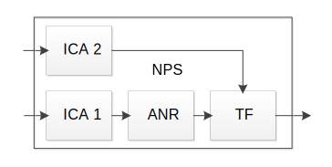
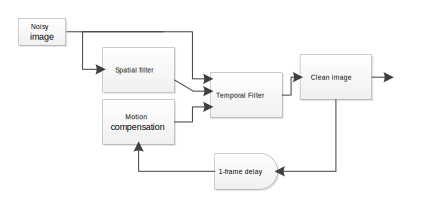
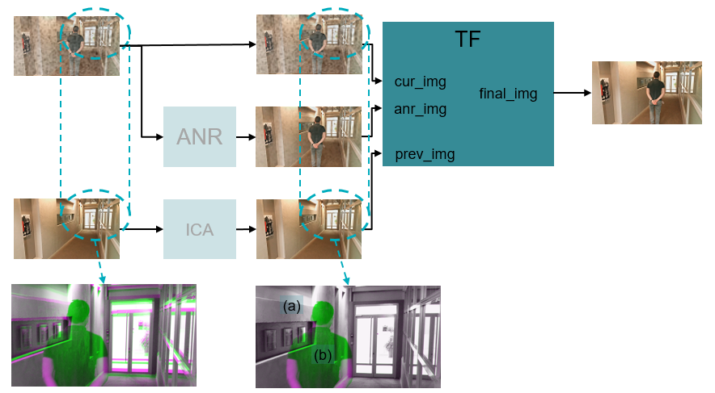

Temporal Filtering (TF) removes unwanted frequencies (noise) within an
image.
TF performs the following:
- Temporal noise filtering: Attenuates the noise signals
- Works on each video frame
- Blends the current frame with the previous frame


MULTIDRAG
- Warping: Warps the previous frame to align it with the current frame. TF
behaves differently accoring to the use case.
- In normal operation: blend cur_img with prev_img
- When detecting local motion: blend cur_img with
anr_img

Ghost detection calculates TF strength (FS). If the current and previous images have
different content, FS = 0, otherwise the objects will appear twice (i.e., as ghosts). If
the current and previous images have the same content, FS = 63 (maximum), as the high
filtering strength ensures maximum noise reduction.
For blending:
- final = α1 * prev + (1 - α1) * cur_spatial
- α1 (temporal blending factor)
is a tunable function of FS
- When FS = 0, α1 = 0
- When FS = 63, α1 is
maximal
- α1,maxis big with cleaner
output, but slower convergence
- α1,max is small with faster
convergence, but noise reduction is weaker
- cur_spatial = α2 * ANR + (1 - α2) * cur
- α2 (spatial blending factor)
is a tunable function of FS
- When FS = 0, α2 is
maximal
- When FS = 63, α2 is
minimal
- α2,min is big with less noise
in the output, but with degradation of details
- α2,min is small with more
details preserved, but less noise reduction
Using high-precision mode causes greater power consumption and requires Base Functions
tuning for Full pass.
The TF should be tuned after the ANR is tuned. During the TF tuning, the
following units must be turned on:
- CAC
- CCM
- ASF
- GLUT
- 2D LUT
- Chroma suppression
- Skin color enhancement
- GRA
- M/N DS
If the ANR tuning changes, the TF blending factors are retuned.